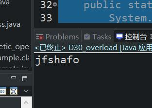
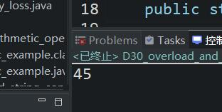

原文出处:本文由博客园博主心悦君兮君不知-睿提供。
原文连接:https://www.cnblogs.com/ruigege0000/p/11525237.html
原文连接:https://www.cnblogs.com/ruigege0000/p/11525237.html
一、方法重载
1.又被称为overload
2.方法重载使用场景
功能类似的时候，尽可能仍方法名相同（但是功能不同或者不相似的时候，方法名尽量不同）
3.什么条件满足之后，可以构成方法重载
（1）在同一类中；（2）方法名不同；（3）参数列表不同：i.数量不同；ii.顺序不同；iii.类型不同
4.方法重载和什么有关系，和什么没有关系？
（1）方法重载和方法名+参数列表无关
（2）方法重载和返回值类型无关
package code_class_file;
public class D30_overload {
public static void main(String[] args) {
m1();
m4(2,4);
m5();
}
//以下两个方法构成重载(数量不同)
public static void m1() {}
public static void m1(int a) {}
//以下两种方式构成重载（顺序不同）
public static void m2(int a,double b) {}
public static void m2(double a,int b) {}
//以下两种方式构成方法重载（类型不同）
public static void m3(int x) {}
public static void m3(double x) {}
//以下方法编译错误，不属于方法重载，属于方法重复
//public static void m4(int a,int b){}
//public static void m4(int b,int a){}
//以下方法编译错误，不属于方法重载，属于方法错误
//void m5(){}
//public static void m5(){}
}
5.方法重载的具体应用
简写打印操作
public static void main(String[] args) {
//简写打印操作
p("jfshafo");
}
public static void p(byte a) {
System.out.print(a);
}
public static void p(short a) {
System.out.print(a);
}
public static void p(char a) {
System.out.print(a);
}
public static void p(int a) {
System.out.print(a);
}
public static void p(long a) {
System.out.print(a);
}
public static void p(float a) {
System.out.print(a);
}
public static void p(double a) {
System.out.print(a);
}
public static void p(boolean a) {
System.out.print(a);
}
public static void p(String a) {
System.out.print(a);
}
public static void p(String[] a) {
System.out.print(a);
}
二、方法递归
1.方法递归定义
答：方法调用自身调用自身，称为递归
例子：
a(){
a();
}
2.递归是很耗费栈内存的，能不用就不用了
以下程序发生了这样的一个错误（不是异常，是错误），错误发生的时候无法挽回，只有一个结果，那就是JVM停止工作
public static void main(String[] args) {
dosome();
}
public static dosome() {
p("dosome开始");
dosome();
p("dosome结束");
}
3.递归必须有结束条件，没有结束条件会导致栈内存溢出
4.有些情况下该功能的实现必须借助递归，例如：目录拷贝
5.例子：用递归写一个计算1~N的整数求和
public static void main(String[] args) {
int N=9;
int resultSum = sum(N);
System.out.println(resultSum);
}
public static int sum(int a) {
if (a > 1) {
return a+sum(a-1);
}else {
return 1;
}
}
三、源码：
D30_overload_and_recursion.java
地址：
https://github.com/ruigege66/Java/blob/master/D30_overload_and_recursion.java
2.CSDN：https://blog.csdn.net/weixin_44630050（心悦君兮君不知-睿）
3.博客园：https://www.cnblogs.com/ruigege0000/
4.欢迎关注微信公众号：傅里叶变换，个人公众号，仅用于学习交流，后台回复”礼包“，获取大数据学习资料